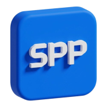

smart purge platform
- 프로젝트 사양
- ONLY PC WEB
- 기술 스택
- HTML, CSS, Javascript (Only Vanilla)
- 기여도
- 퍼블리싱 100%
- 작업 년도
- 2026년
Overview
현대캐피탈의 개인신용정보 파기 및 분리보관 시스템 신규 구축 프로젝트입니다.개인정보 보호 관련 법령(파기 및 보관 주기) 준수와 위법 요소를 시스템적으로 사전 예방·관리하는 것을 목표로 진행되었습니다.
💻 Publishing
- 1. 디자인 시스템 연동 및 퍼블리싱 생산성 극대화
-
Figma와 CSS 변수(Variables) 1:1 매칭 구조 설계
Figma 디자인 시스템의 변수명과 CSS 변수를 1:1로 일치시켜, 기획 및 디자인 변경 시 전역 테마 스타일을 일괄 수정할 수 있는 높은 확장성 확보 -
개발 파트 협업을 위한 '컴포넌트 가이드 페이지' 자발적 구축
독립 검수 서버가 없는 폐쇄망 환경의 제약을 극복하고자, 공통 컴포넌트를 케이스별로 모아둔 가이드 페이지를 직접 구축하여 개발 파트의 마크업 의존도를 줄이고 검수 공수 절감 - 2. Vanilla JS 기반의 UI 기능 개발 및 라이브러리 커스터마이징
-
Vanilla JS 활용 실시간 동적 툴팁(Tooltip) 기능 구현
시스템 내 text-overflow(말줄임표) 발생 여부를 실시간으로 감지하여, 텍스트가 잘린 요소에만 동적으로 툴팁을 생성하는 UI 로직을 AI를 활용해 직접 구현 및 적용 -
요구사항에 맞춘 라이브러리 UI 커스터마이징
NHN Toast UI (Grid, Tree, Datepicker) 및 Chart.js 등의 외부 라이브러리를 사내 디자인 가이드라인에 맞춰 정밀 커스텀 스타일링 - 3. 크로스 브라우징 및 글로벌 환경 대응
-
다국어(영문) 대응 레이아웃 설계
국문 대비 텍스트 길이가 길어지는 영문화 환경을 고려하여, 깨짐 없는 유연한 텍스트 가변 레이아웃 구현 -
사내 아웃룩(Outlook) 환경의 시스템 이메일 폼 퍼블리싱
아웃룩 메일 클라이언트 특유의 렌더링 한계를 고려한 인라인 스타일 기반 HTML 폼 마크업 작성